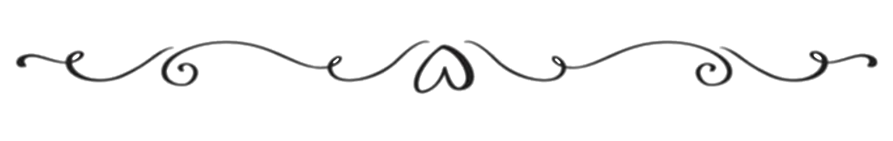
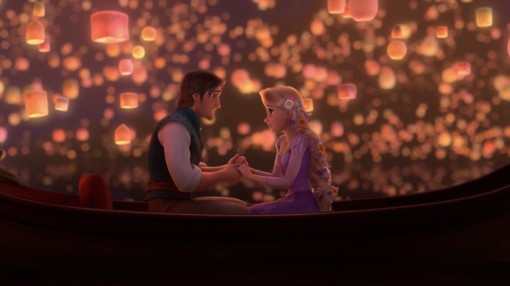
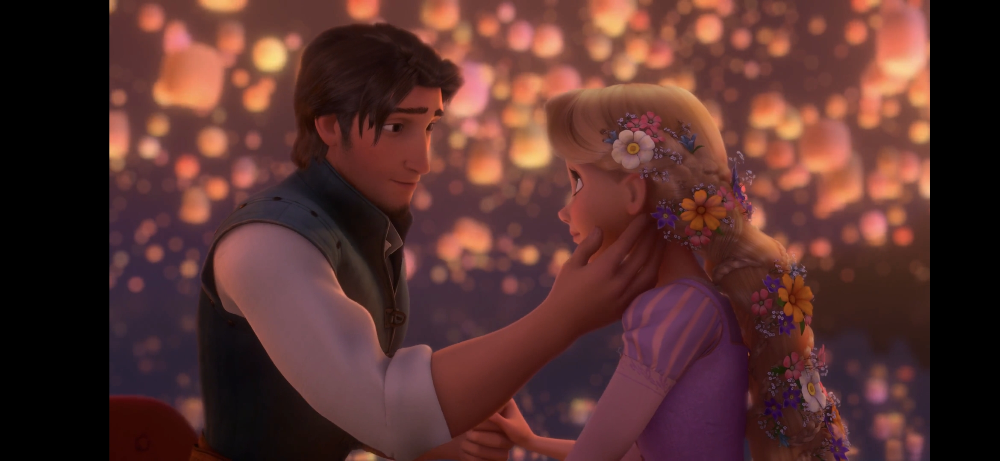

Yükleniyor...
Hayatımın anlamı, biricik sevgilim, Deniz'ime;
Sana çok şey anlatmak, çok şey göstermek istiyorum ama hepsini yapmam mümkün değil. Çünkü ben bile bilmiyorum bu neyin nesi. Bu hisler, bu düşünceler, bu aşk. Öyle bir şey ki hiçbir şeyle karşılaştırılamaz, hiçbir şeyle ölçülemez. Hiçbir kelime, hiçbir cümle ya da paragraf da anlatmaya yetmez bunu. Ancak benim gözümdeki seni sana gösterebilseydim mümkün olurdu az da olsa anlaman. Öylesine büyülü bir şey sana olan aşkım.
Ama ben yine de deneyeceğim en iyi bildiğim şeyi yapmayı: İçimi cümlelere dökmeyi. Bendeki seni sana gösteremem belki ama en azından cümlelere döker, sana okuturum.
Hayatımda öyle bir etkin var ki, seninle tanışmadan önceki ben, ben değildim sanki. Henüz kendimi bulmamıştım. Tanımamıştım. Tanıdığımı sanıyordum ama aslında sadece istediğim kalıplara uymaya çalışıyordum. Kendime dair oluşturduğum o sabit fikirlerden ibarettim ve bunun farkında bile değildim. Daha büyümemiştim evet ama bunun zamanla alakası yoktu, sadece beni büyütecek o şeyi yaşamamıştım henüz.
Sonra sana âşık oldum.
Her şey bir anda öyle değişti ki Deniz. Sana karşı hissetmeye başladığım bütün o yoğun hisler, gündüzümü gecemi kaplayan o düşünceler, başka kimseye göstermediğim o özen, gerçekleşmeyeceğini bilmeme rağmen kendimi kurmaktan alıkoyamadığım o hayaller, ufacık kötü bir şey sezdiğimdeki inanılmaz telaşım... Kendimi tanıyamıyordum. Bu ben değildim ve ben sandığım kişiden uzaklaşmak korkunçtu. Bu yüzden çok uzun bir zaman inkâr ettim aşkımı. Yarım yıl kadar, belki daha da uzun bir süre. Ama ne inkâr etmek, ne görmezden gelmek ne de onu gömmeye çalışmak, aşkı köreltmiyormuş. Aksine giderek arttı her şey ve inkâr edemediğim bir noktaya ulaştı. O zaman kabul ettim. Evet, seni seviyordum. Sana âşıktım. Ve artık bundan korkmuyordum. Beni değiştirdiğini biliyordum ama sevme hissinin güzelliği her şeyden daha üstündü artık.
Başlarda gerçekten her şey mükemmeldi. Senin beni sevmediğini biliyordum (öyle sanıyordum) ama bunu sorun etmiyordum. Olsun, diyordum kendi kendime. Aramızda bir şey olmasa da olur. Yeter ki hep onun yanında olayım.
Ama öyle olmuyormuş. Arzular... Bunlar insanı yiyip bitiriyormuş. Her geçen günde daha da büyüyen duyguların seni ve zihnini sarıp sarmalıyormuş. Arzulamaya başlıyormuşsun her şeyi. Ona söylemeyi, ona bakmayı, ona dokunmayı, onunla uyumayı, onu öpmeyi istiyormuşsun. O kişiyi istiyormuşsun. Her şeyiyle.
Tam seni böyle istemeye başladığım zamanlar korkunçlaştı her şey. Bir kâbus gibiydi.
Benden yavaş yavaş uzaklaştığını fark etmeye başladığımda bunu kabul etmek istemedim. Edemedim. Hiçbir şeye anlam veremiyordum. Birden bire ne olmuştu? Neden böyle yapıyordun? Sorun bende miydi? Seni sıkmış mıydım? Benden sıkılmış mıydın? Sana olan sevgim senden çok kendimi sorgulamama sebep oluyordu. Ama ne kadar çok soru sorarsam sorayım cevapları hiçbir yerde bulamıyordum. Her geçen gün kalbim daha da kırılıyordu. Beni artık umursamadığını, benden soğuduğunu hatta beni sevmediğini düşünmek beni öldürüyordu.
Ama en kötüsü seni kaybetme ihtimaliydi. Her şeyi kaldırırdım ama bunu kaldıramazdım. En büyük korkumdu. Bu korku giderek büyüdü, büyüdü ve büyüdü. Bir şeyleri düzeltebilmek için düşünmediğim, çabalamadığım tek bir an bile yoktu. Sanki hayatım buna bağlıymış gibi savaşıyordum. Öyle hissediyordum. Hayatım buna bağlıydı. O kadar çok sevmiştim ki, seni sevmeyi bırakma fikrinden nefret ediyordum. Ölüm gibiydi bu. Hayatın sonuydu. Seni sevmeyi seviyordum. Senden vazgeçip de hayatıma başka birisini aldığım bir senaryoyu düşlediğimde midem bulanıyordu. Başka hiç kimseyi istemiyordum. Sadece seni istiyordum. Seni sevmeyi istiyordum.
Ama gerçekler daha güçlüydü bütün bunlardan. Beni senden vazgeçmek zorunda bıraktın. En kötüsü buydu. Bir seçim yapmak değil de, artık başka bir seçeneğin kalmadığını anlayarak vazgeçmek. Vazgeçtim.
Mutlu olmaya çalışıyordum. İyileşmeye, seni unutmaya çalışıyordum. Yeni bir hayata atıldım, yenilikler biraz kolaylaştırdı bazı şeyleri.
Başardığımı düşünüyordum. Başarmak zorundaydım çünkü ben kendimi bildim bileli mutsuz bir insan olmamıştım. Sanki mutsuz olamazdım. Gidenin arkasından yas tutamazdım. Bana yakışmazdı bu. Olur da böyle bir karamsarlığa düşersem her şey biterdi sanki.
Bu yüzden her şeyi zihnimin gizli yerlerine sakladım. Kaçtım onlardan. Senden kaçtım. Yokmuşsun, hiç olmamışsın gibi davrandım.
Ama vardın. Hiçbir zaman, hiçbir yere gitmedin.
İnsanları sana benzetiyordum, sanki bir anda karşıma çıkacakmışsın gibi korkuyordum. Seni görmeyi asla istemiyordum ama bir yandan da çok istiyordum. Sonra, durup dururken aklıma geliyordun. Bir anda beliriveriyordun. Seninle ilgili bir şey görsem, duysam, tanısam kalbimin acıdığını hissediyordum. Çünkü sen hâlâ oradaydın ama ben kendime bunu itiraf edemiyordum.
Başkalarına anlatırken unuttum diyordum. Artık ona karşı hiçbir şey hissetmiyorum diyordum. Kendime inanarak söylüyordum bunları. Ama kendimi kandırıyordum.
Bir gün, seni düşünürken, içimden şöyle bir cümle kurarken buldum kendimi: Ben ondan başkasını sevemeyeceğim.
Unutamamıştım. Unutamıyordum seni Deniz. Öyle çok sevmiştim ki yapamıyordum. Seni unutmak, kendimi unutmak gibiydi. Ben kendimi sende bulmuştum. Seni kaybettiğimde kendimden bir parçamı kaybetmiştim. Geriye kalan tek şey ise sana olan aşkımdı. Onu da unutursam hiçbir şeyim kalmayacaktı. O yüzden unutamıyordum. Ve çok, çok uzun bir süre de unutamayacaktım.
Ama zorundaydım. O kadar kararlıydım ki seni unutmaya. Benim için bitmiştin. Evet seni silememiştim ama bittiğinden emindim. Sonu gelmişti bu hikâyenin ve ne olursa olsun devam etmeyecekti. Çünkü beni böyle umutsuzluğa sürükleyen birisi artık hiçbir şeyi hak etmezdi. Ne olursa olsun.
Ama o "ne olursa olsun"un içine duygularımın karşılık bulması ihtimalini hiç katmamıştım. Nasıl katabilirdim ki? İmkansızın ötesinde bir şeydi bu benim için. Seven böyle yapmaz demiştim kendime kaç kez. Böyle öğrenmiştim ben.
Ama öyle olmayabileceğini öğrettin bana.
Bir anda geldin ve beni tekrar karman çorman ettin. İtirafını yaptığın o mesajı gördüğüm an içimde bir şeyler koptu sanki. Sana karşı olan başarısız nefretim, unutma kararlılığım, affetmeme inadım... Hepsi bir anda kayboluverdi. Ve derinlere sakladığım aşkım gün yüzüne çıktı.
Sen de beni seviyordun. Seviyordun. Unutamamıştın ve geri dönmüştün. Bu yaşanan şey gerçek olamayacak kadar güzel, doğru olamayacak kadar olağanüstü geliyordu o an. Bir saat öncesine kadar beni sevdiğin fikri, artık hayalini bile kuramayacağım kadar uzaktı bana. Ama şimdi gerçekti işte. Birbirimizi sevmiştik ve birbirimizden haberimiz olmadan yaşamıştık.
O geceyi nasıl geçirdim, nasıl atlattım, ne kadar düşündüm ya da düşünemedim, bilmiyorum. Bildiğim tek bir şey vardı: Öylece bırakamazdım. Bu her şeye haksızlık olurdu. Yaşanan bu ana haksızlık olurdu. Duygulara haksızlık olurdu. Sana, bana haksızlık olurdu. Mutlu olabileceğimiz ihtimaline, hayatım boyunca kurduğum o en büyük hayalin ihtimaline haksızlık olurdu. O yüzden aslında daha o gece kararımı vermiştim. Seni tekrar tanımak istiyordum. Bana kâbusu yaşatan versiyonunun gerçek sen olmadığını biliyordum ama bunu gözlerimle görmem gerekiyordu. Bu fikri kalbim çoktan kabul etmişti ama mantığımın da kabullenmesi gerekiyordu. O bir günlük süreyi bu yüzden istedim senden. O gün boyunca biraz arkadaşlarımla, ama daha çok kendimle konuştum. Ve yapmak istediğim şeyden emin oldum.
O geceki konuşmamızı hiçbir şeye değişmem. Sevdiğim insanla, bu sefer beni sevdiğini bildiğim insanla, aylar sonra herhangi bir konu hakkında konuşabilmek o kadar güzeldi ki.
Elbette kendi içimde her şey daha ilk günden eski haline dönmemişti. Bunu sana itiraf etmek istiyorum. Sana olan duygularımı öyle bir bastırmış ve gizlemiştim ki onları eskisi gibi canlı hissedemiyordum. Hislerim hasta olmuş gibiydi. Ama yavaş yavaş, senin çabaladığını gördükçe iyileşmeye başladıklarını anlayabiliyordum. Onların ilacı basitti: Senin ufacık da olsa çabaladığını görmek. Zaten küçücük bir kıvılcıma tutunmaya hazırlardı.
Şimdi hislerim eskisinden bile sağlıklı ve sana eskisinden bile çok âşığım Deniz. Böyle bir aşkın nasıl var olabildiğini düşündürecek kadar çok.
Ve şimdi, beraber ilk 14 Şubat'ımızı geçiriyoruz işte. İlk sevgililer günümü geçirdiğim kişi sen olduğun için öyle mutluyum ki.
Sen de hâlâ bir mucizeyi yaşıyormuş gibi hissediyor musun? Ben öyle hissediyorum. Hâlâ inanamıyorum. Gerçekten benimlesin. Sevdiğimsin. Sevenimsin. Sevgilimsin.
Sen benim için mucizevi bir şeysin. Benim mucizemsin.
Sana bunları anlatıyorum çünkü geçmiş yaşanmamış gibi davranmak istemiyorum. Seninle geçirdiğim her gün, her ay, her yıl bana bir şey kattı Deniz. Ben seninle öğrendim. Sevmeyi seninle öğrendim. Hissetmeyi seninle öğrendim. Üzülmeyi seninle öğrendim. Bir insana duyulabilecek hem en kötü hem en güzel hisleri seninle öğrendim. Bir insanın hissettirebileceği hem en kötü hem en güzel hisleri seninle öğrendim. Aşkı seninle öğrendim. Seninle büyüdüm. Seninle geliştim. Seninle kendimi tanıdım. Ben kendimi sende buldum.
Yaşadığımız, birbirimize yaşattığımız ne varsa hepsinin bir anlamı var bunu biliyorum. Bizi bu güne yaşadıklarımız getirdi. Bizi şimdi birbirimize böylesine sıkı bağlayan şeyler, geçirdiğimiz o günler.
Bu yüzden çabaladığım hiçbir şeyden, aldığım hiçbir karardan pişman değilim. Geçirdiğim hiçbir güne keşke yaşanmasaydı demiyorum ve demeyeceğim. Seninle ilgili her anıya iyi ki diyorum.
Deniz'im,
Seni çok seviyorum. Çok ama çok. Herkesten, her şeyden çok. Öyle çok ki bunu sana bıkmadan usanmadan her gün, her saat söylemek istiyorum. İçim içime sığmıyor seni düşününce. Sevgimden patlayacakmış gibi hissediyorum. Yüzün gözümün önüne geldiği her an boynuna atlayıp saatlerce sarılmak istiyorum. Ama saatlerce sarılsam yine doymam sana. Mecnun'u Leyla için çöllere düşüren aşkı, Ferhat'a Şirin için dağları deldirten aşkı benim aşkımın yanında halt yemiş. Fasa fiso. Bilmem anlatabiliyor muyum? Öylesine çok seviyorum işte seni. Umarım şimdiye kadar sana olan sevgimden bir an bile tereddüt etmemişsindir. İnan bana, hayatta hep emin olacağım tek bir şey varsa o da sana karşı olan sınırsız sevgimdir. Bak, sevgimi anlatmayı bile bitiremiyorum çünkü sonu olan bir şey değil.
Teşekkür ederim Deniz.
Bana bu güzel hisleri hissettirdiğin için teşekkür ederim.
Beni sevmekten vazgeçmediğin için teşekkür ederim.
Dönmeye karar verdiğin için teşekkür ederim.
Bu aşkın öylece kaybolup gitmesine, yokluğa karışmasına izin vermediğin için teşekkür ederim.
Yanımda olduğun, tutunacak dalım olduğun için teşekkür ederim.
Doğum günün kutlu olsun aşkım benim. 19. yaşın sana güzel günler getirsin. Getireceğine eminim. Çünkü hiç yalnız olmayacaksın. Bu yaşında da, sonraki her yaşında da yanında olmaya hazırım. Hep elinden tutmaya hazırım. Seni mutlu etmek, sana iyi gelmek, iyi bir sevgili olmak için elimden ne geliyorsa daha da fazlasını yapacağıma söz veriyorum.
İyi ki doğmuşsun. İyi ki benimlesin. İyi ki o gün o duvara o ismi yazmışım. İyi ki o gün o yazıyı görmüşsün. İyi ki seni sevmişim. İyi ki beni sevmişsin. İyi ki varsın. Daha çok iyi ki sayarım ve ne kadar sayarsam sayayım yetmez, ama iyi ki.
İyi ki biz sevgilim.
— Seni sonsuz seven sevgilin.
  